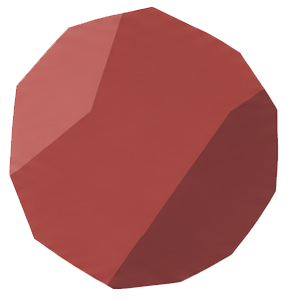
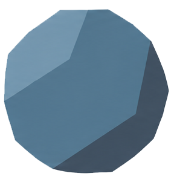
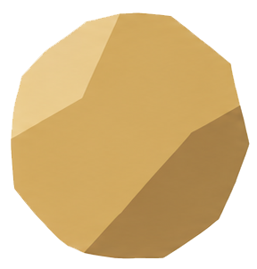

Нажмите на арт слева, чтобы открыть текст. Пролог новой истории уже опубликован. Первое знакомство с героями, атмосферой и событиями, с которых всё начинается. Доступ открыт для подписчиков любого уровня.
Обновление: «Горячее солнце»
Дата: 02.10.26г.
Нажмите на арт справа, чтобы открыть текст. Полный черновой набросок уже на сайте. История целиком — в её первой, ещё не отшлифованной авторской версии. Доступ открыт для подписчиков уровня «Свидетель».
Обновление: «Дети Крампуса: Тени Йоля»
Дата: 02.10.26г.
Нажмите на арт слева, чтобы открыть текст. Пролог новой истории уже опубликован. Начало мрачной зимней истории и первое знакомство с миром, в котором приближение праздника не сулит ничего хорошего. Доступ открыт для подписчиков уровня «Ценитель».
Книги
Здесь собраны книги и крупная проза — законченные, опубликованные и ещё ожидающие своего выхода. Одни уже готовы встретиться с читателем, другие пока только обретают окончательную форму, но у каждой есть собственный мир, герои и история, ради которой она появилась.
Здесь пока пусто. Аудиоверсии историй появятся позже.
Читательский круг
Если хочется читать больше и раньше — можно присоединиться к читательскому кругу и поддержать мою работу через Boosty. Подписка открывает доступ к полным версиям текстов, ранним публикациям и материалам, которые не появляются в открытом доступе.
Бесплатно

Ознакомительные фрагменты
Публикации с маркировкой ниже 18+
Публикации в порядке очереди
Свидетель

Полные тексты
Доступ к материалам с маркировкой 18+
Ранний доступ к публикациям
Контркультурная проза
Ценитель

Полные тексты
Доступ к материалам с маркировкой 18+
Доступ ко всем ранним публикациям
Контркультурная проза
Незаконченная проза
Стихотворения и Песни
Бумажные издания
Бумажные версии книг пока готовятся к публикации. Когда откроется предзаказ, здесь появится информация о доступных изданиях, сроках и способах заказа.